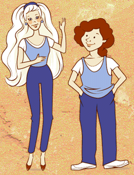

|  |
I've used the word idealized to describe the facial features of the shrine head. Look closely at the raised edges of the lips and the grooves around the neck. Notice how the upper eyelid overhangs the lower at the corners. These features all follow a pattern rather than being realistic.
|